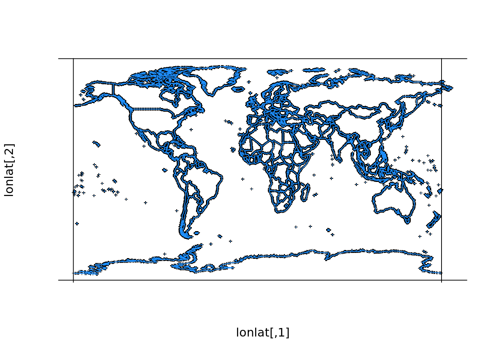
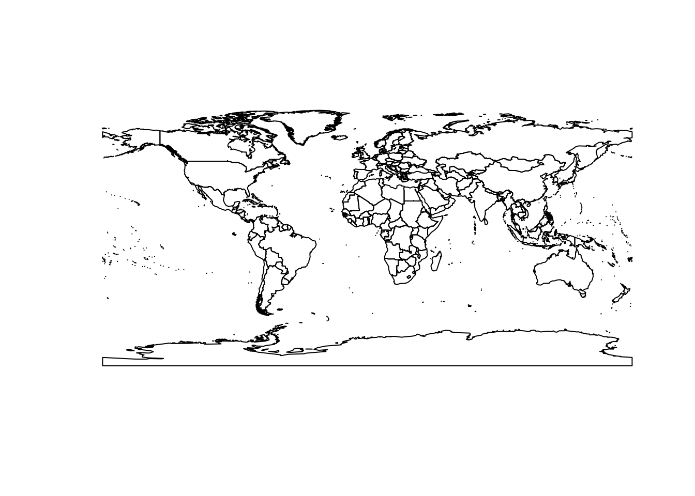
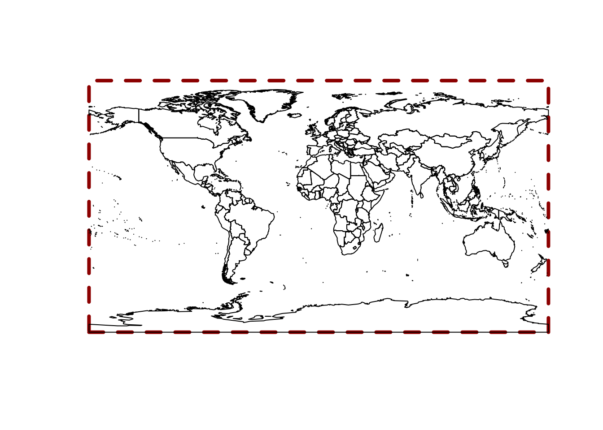
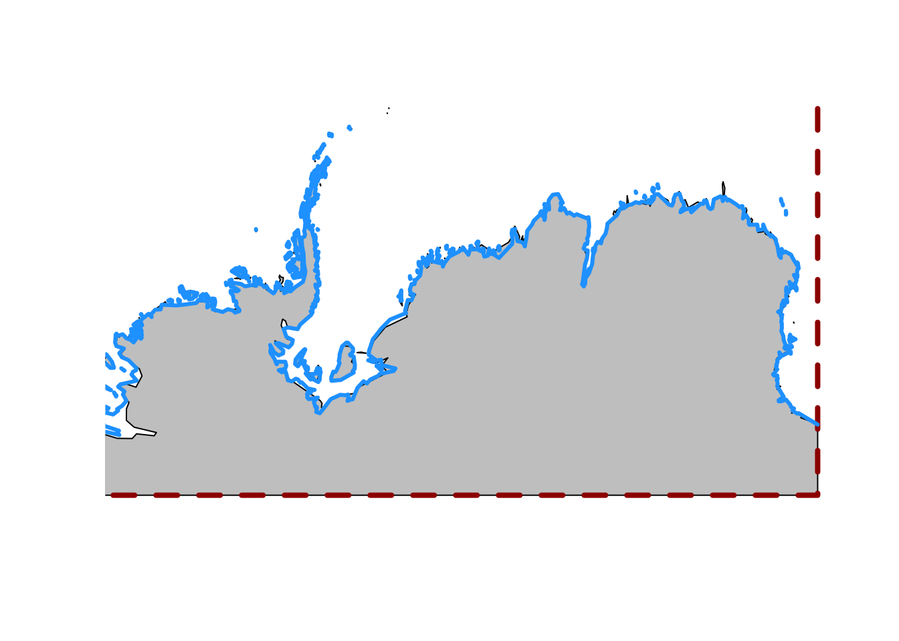
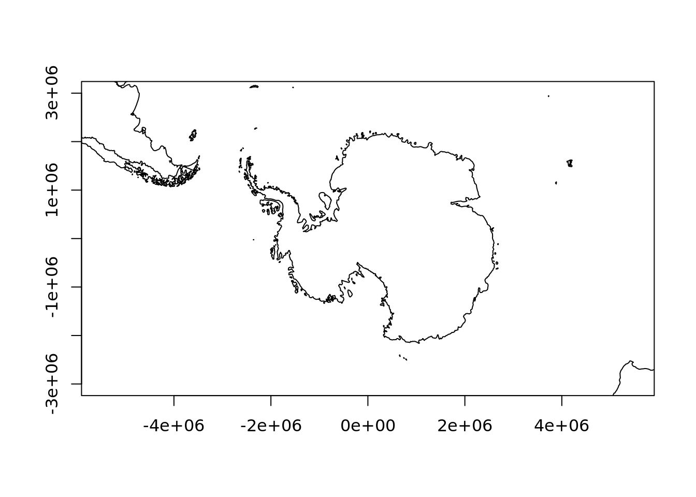
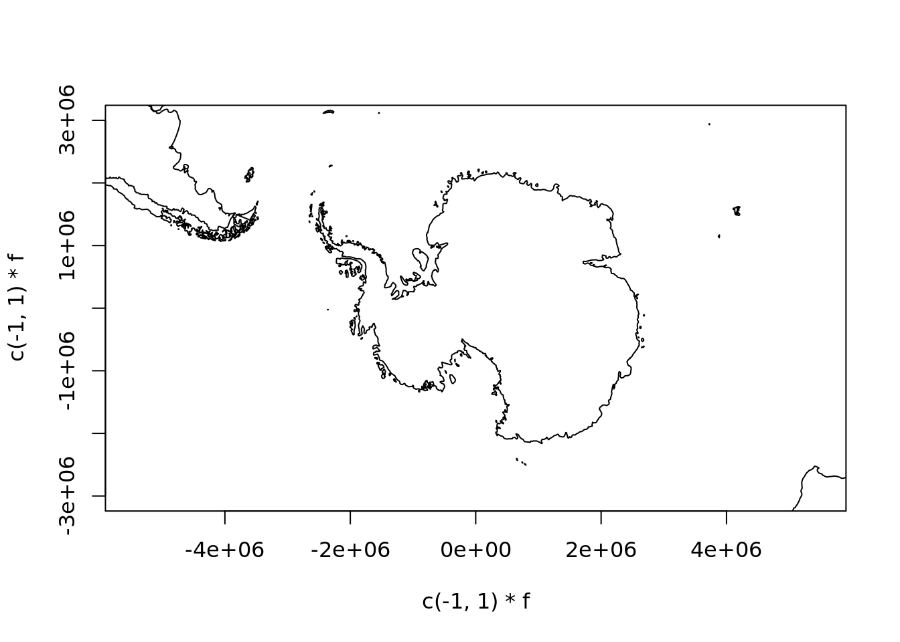
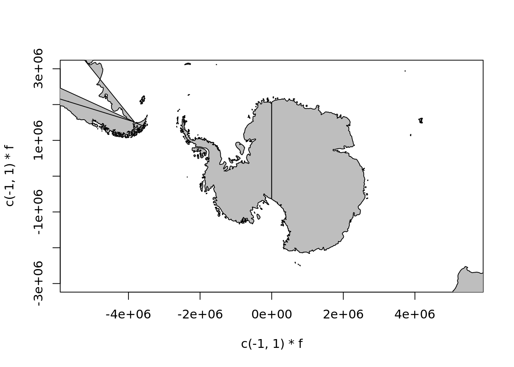
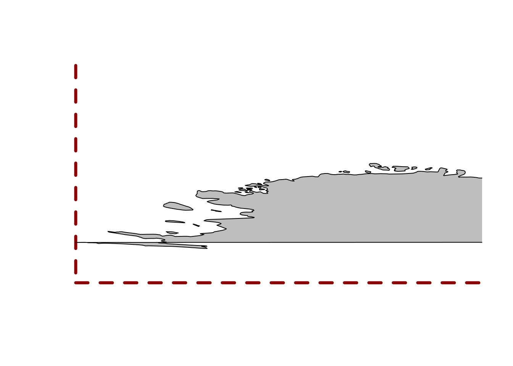
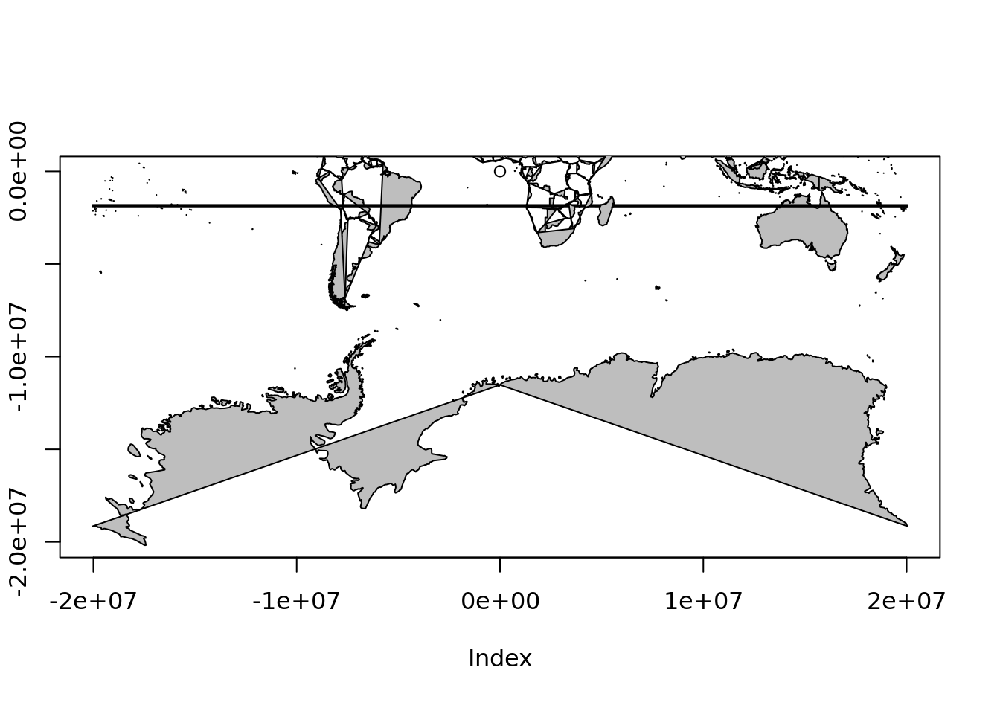

3 Polar maps
What is required for mapping in polar regions?
- shape-feature orientations, the dateline and the poles
- handling of data in long-lat, understanding of metrics and shape (area, length, angle)
- projected maps can be very hard to do, each has its own issues
- quantities like vector fields
- conventions for global data -180/180, 0/360
3.1 Mapping in R
The oldest general mapping tool in R is the maps package. It has a simple whole-world coastline data set for immediate use.

The data underlying this live map is available by capturing the output as an actual object.
If we look carefully at the southern edge and the eastern edge, notice that the coastline for Antarctica does not extend to the south pole, and that Chukotka region of Russia east of 180 longitude are not in the western part of the map.
maps_c <- maps::map(plot = FALSE)
lonlat <- cbind(maps_c$x, maps_c$y)
plot(lonlat, pch = "+", cex = 0.4, axes = FALSE)
lines(lonlat, col = "dodgerblue")
abline(h = c(-90, 90), v = c(-180, 180))
A very similar and slightly more modern data set is available in the maptools package.
(It’s not sensible use maps or maptools for coasline or country boundary data, but they
are handy for exploring concepts ).

This data set aligns exactly to the conventional -180/180 -90/90 extent of the longitude/latitude projection.
plot(0, type = "n", axes = FALSE, xlab = "", ylab = "", xlim = c(-180, 180), ylim = c(-90, 90))
rect(xleft = -180, ybottom = -90, xright = 180, ytop = 90, border = "darkred", lwd = 4, lty = 2)
plot(wrld_simpl, add = TRUE)
3.2 Exercises 01
- How can we find the longitude and latitude ranges of the maps data
maps_cand the maptools datawrld_simpl? - Can we draw polygons with a fill colour with the maps package?
Answer 1: range(m$x, na.rm = TRUE) range(m$y, na.rm = TRUE) also m$range
Answer 2: polygon(lonlat, col = "grey") does not work, and map(mp, fill = TRUE, col = "grey") does not work, but maps::map(fill = TRUE, col = "grey") does seem to work.
What’s going on? Look at the very south-eastern corner of the map. The “coastline” has been extended to the very south boundary of the available area.
plot(0, type = "n", axes = FALSE, xlab = "", ylab = "", xlim = c(-150, 180), ylim = c(-90, -60))
plot(wrld_simpl, add = TRUE, col = "grey")
rect(xleft = -180, ybottom = -90, xright = 180, ytop = 90, border = "darkred", lwd = 4, lty = 2)
maps::map(add = TRUE, col = "dodgerblue", lwd = 3)
When we add the old maps coastline see that it does not extend to 90S and it does not traverse the southern boundary.
One reason for this is that if we choose a projection where the east and west edges of the Antarctic coastline meet then we get what looks a fairly clean join.
## scale factor
f <- 3e6
plot(rgdal::project(lonlat, "+proj=laea +lat_0=-90 +datum=WGS84"), asp = 1, type = "l",
xlim = c(-1, 1) * f, ylim = c(-1, 1) * f, xlab = "", ylab = "")
If we try the same with wrld_simpl it’s not as neat. We have a strange “seam” that points exactly to the south pole (our projection is centred on longitude = 0, and latitude = -90.
plot(sp::spTransform(wrld_simpl, "+proj=laea +lat_0=-90 +datum=WGS84"), asp = 1,
xlim = c(-1, 1) * f, ylim = c(-1, 1) * f, xlab = "", ylab = "", lwd = 3)
abline(v = 0, h = 0, lty = 2, col = "grey")
3.3 Let’s use the maps data!
In maps_c we have the maps data structure, and this looks promising.
## List of 4
## $ x : num [1:82403] -69.9 -69.9 -69.9 -70 -70.1 ...
## $ y : num [1:82403] 12.5 12.4 12.4 12.5 12.5 ...
## $ range: num [1:4] -180 190.3 -85.2 83.6
## $ names: chr [1:1627] "Aruba" "Afghanistan" "Angola" "Angola:Cabinda" ...
## - attr(*, "class")= chr "map"mp <- maps_c
pxy <- rgdal::project(lonlat, "+proj=laea +lat_0=-90 +datum=WGS84")
mp$x <- pxy[,1]
mp$y <- pxy[,2]
mp$range <- c(range(mp$x,na.rm = TRUE), range(mp$y, na.rm = TRUE))
mp$range## [1] -12709814 12704237 -12576156 12470787
## but it doesn't take much to go awry
plot(c(-1, 1) * f, c(-1, 1) * f, type = "n", asp = 1)
maps::map(mp, add = TRUE, fill = TRUE, col = "grey")
The problem is that the maps database has enough internal structure to join lines correctly, with NA gaps between different connected linestrings, but not enough to draw these things as polygons. A similar problem occurs in the default projection. While wrld_simpl has been extend by placing two dummy coordinates at the east and west versions of the south pole, this data set does not have those.
We have to look quite carefully to understand what is happening, but this is wrapping around overlapping itself and so close to the southern bound we barely notice.
plot(0, type = "n", axes = FALSE, xlab = "", ylab = "", xlim = c(-180, -110), ylim = c(-90, -60))
rect(xleft = -180, ybottom = -90, xright = 180, ytop = 90, border = "darkred", lwd = 4, lty = 2)
maps::map(add = TRUE,col = "grey", fill = TRUE)
mpmerc <- maps_c
pxy <- rgdal::project(lonlat, "+proj=merc +datum=WGS84")
mpmerc$x <- pxy[,1]
mpmerc$y <- pxy[,2]
mpmerc$range <- c(range(mpmerc$x,na.rm = TRUE), range(mpmerc$y, na.rm = TRUE))
mpmerc$range## [1] -20037508 20037508 -20179524 18351859## the catastrophe made a little clearer
plot(0, xlim = range(mpmerc$range[1:2]), ylim = c(mpmerc$range[1], 0))
maps::map(mpmerc, fill = TRUE, col = "grey", add = TRUE)
3.4 Reprojecting to polar regions
In essence it should be easy, but details really matter.
## Warning in .varName(nc, varname, warn = warn): varname used is: sst
## If that is not correct, you can set it to one of: sst, anom, err, ice## Warning in rgdal::rawTransform(projfrom, projto, nrow(xy), xy[, 1], xy[, :
## 48 projected point(s) not finite## Warning in rgdal::rawTransform(projto_int, projfrom, nrow(xy), xy[, 1], :
## 6211 projected point(s) not finite
## Warning in rgdal::rawTransform(projfrom, projto, nrow(xy), xy[, 1], xy[, :
## 48 projected point(s) not finite## Warning in rgdal::rawTransform(projto_int, projfrom, nrow(xy), xy[, 1], :
## 6213 projected point(s) not finite
Loxodromes need densifying, and not along great circles.
The pole is undefined in Mercator.
Sensible polar projections are stereographic and Lambert Azimuthal Equal Area. These are more or less identical over a large area, so knowing what is in use really matters!
data("wrld_simpl", package = "maptools")
laea <- "+proj=laea +lon_0=0 +lat_0=-90 +datum=WGS84"
stere <- "+proj=stere +lon_0=0 +lat_0=-90 +datum=WGS84"
wm <- wrld_simpl[coordinates(wrld_simpl)[,2] < 30, ]
## remember that plotting in R is usually *NOT* coordinate system aware ...
plot(spTransform(wm, laea))
plot(spTransform(wm, stere), add = TRUE, border = "firebrick")
points(0, 0, cex = 40)
This video explains the Lambert Azimuthal Equal Area projection: https://www.youtube.com/watch?v=quzIU4nL9ig (crux at 2:25 with the spherical shells).
3.5 Demonstration of the projection concept
rgl plots Stereographic, LAEA, Orthographic